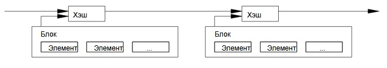

3. Сервер меток времени
Начнем описание нашего решения с сервера меток времени. Его работа заключается
в хэшировании блока данных, на который нужно поставить метку, и открытой
публикации этого хэша, как в газете или Usenet-постах. Метка времени
показывает, что в данный момент конкретные данные существовали и потому попали
в хэш блока. Каждый хэш включает в себя предыдущую метку: так
выстраивается цепь, где очередное звено укрепляет все предыдущие.
